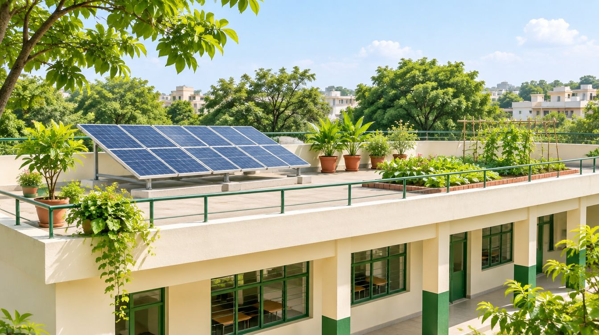
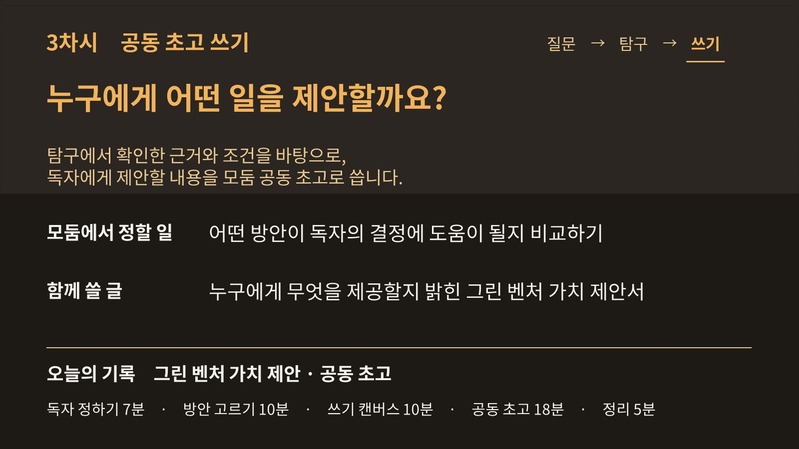
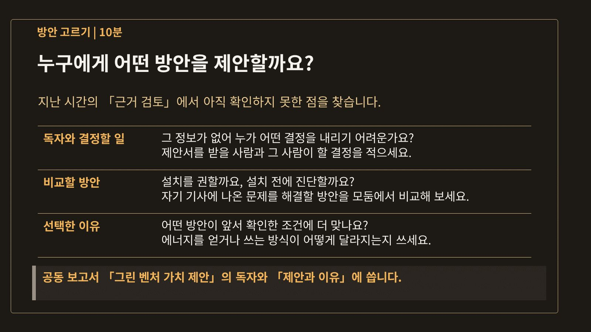
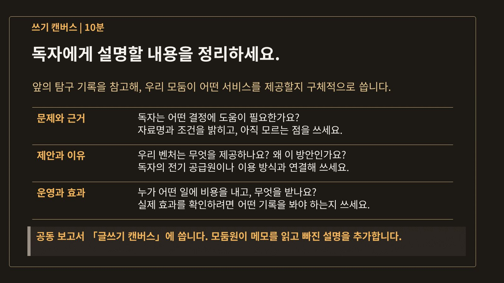
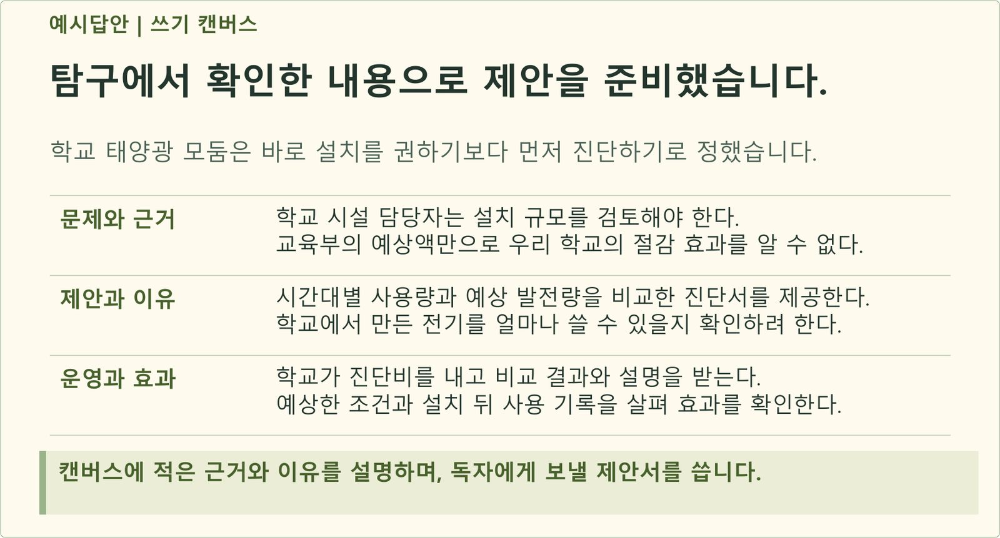
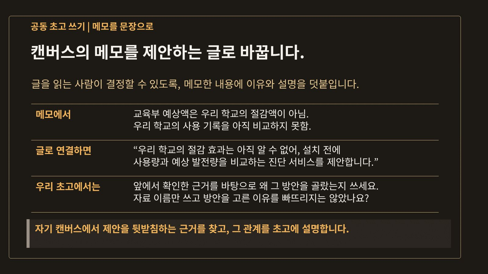
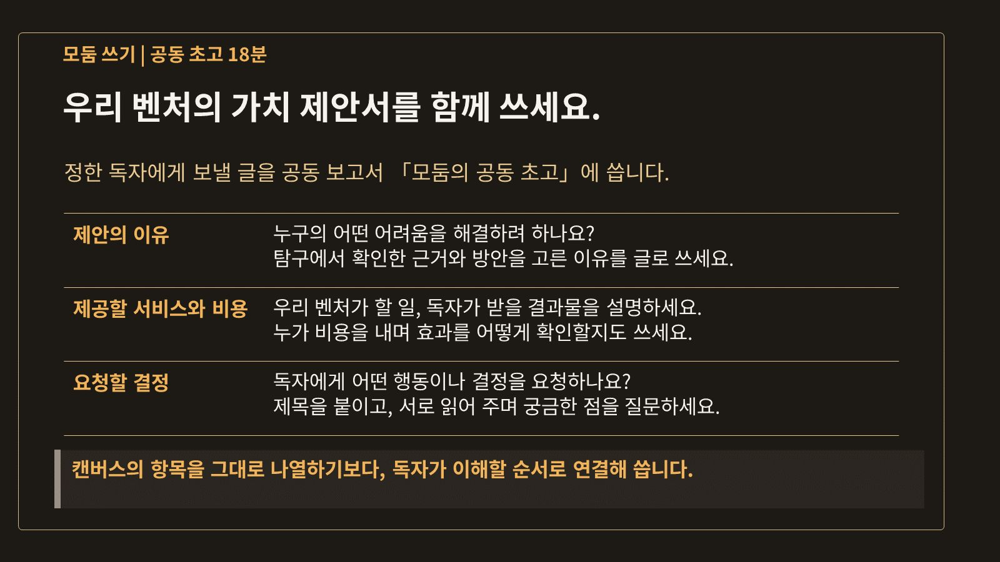
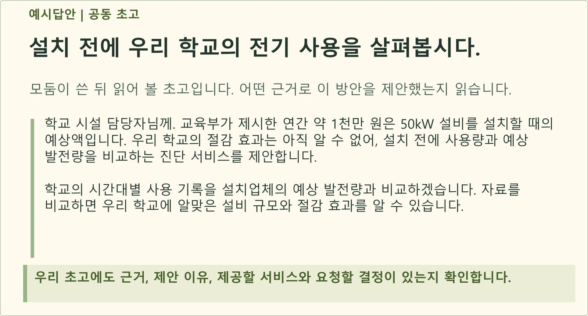
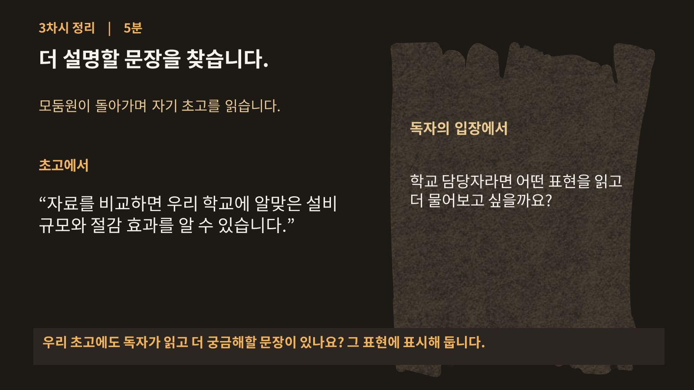

누구에게 어떤 일을 제안할까요?
오늘의 목표에너지 믹스 개선을 위한 방안을 선택하고, 고객의 문제와 근거, 운영 방식과 기대 가치를 예상 독자에게 설득력 있게 제안해요.

수업 흐름
← → 키로 단계를 넘겨요. 교사 모드를 켜면 발문과 유의점이 함께 보여요.
이 근거를 가지고 누구에게 무엇을 제안할까요?
지난 시간의 판단을 읽고, 그 정보가 없어 누가 어떤 결정을 내리기 어려운지 의논해요. 서비스를 쓸 사람과 비용을 낼 사람이 다르면 각각 적어요.
2차시 「근거 검토」 다시 보기 ↗
오늘의 목표
에너지 믹스 개선을 위한 방안을 선택하고, 고객의 문제와 근거, 운영 방식과 기대 가치를 예상 독자에게 설득력 있게 제안해요.
확인한 조건에 맞는 방안 하나
문제–근거 · 제안–이유 · 운영–효과
독자에게 보낼 그린 벤처 가치 제안서
설치를 권할까요, 설치 전에 진단할까요?
- 독자와 결정할 일 — 제안서를 받을 사람과 그 사람이 할 결정을 적어요.
- 비교할 방안 — 자기 기사에 나온 문제를 해결할 방안을 모둠에서 비교해요. 장점과 더 확인할 점은?
- 선택한 이유 — 앞서 확인한 조건에 더 맞는 방안은? 에너지를 얻거나 쓰는 방식이 어떻게 달라지나요?

독자에게 설명할 내용을 캔버스에 정리하세요
독자는 어떤 결정에 도움이 필요한가요? 자료명과 조건, 아직 모르는 점.
우리 벤처는 무엇을 제공하나요? 왜 이 방안인가요?
누가 어떤 일에 비용을 내고 무엇을 받나요? 효과는 어떤 기록으로 확인하나요?
아래 근거 사슬 캔버스의 여섯 칸을 채워요. 칸을 채우면 다음 칸으로 선이 이어져요.
근거 사슬 캔버스로 가기 ↓
학교 태양광 모둠은 바로 설치를 권하기보다 먼저 진단하기로 했어요
예시 캔버스 펼치기
학교 시설 담당자는 설치 규모를 검토해야 한다. 교육부의 예상액만으로 우리 학교의 절감 효과를 알 수 없다.
시간대별 사용량과 예상 발전량을 비교한 진단서를 제공한다. 학교에서 만든 전기를 얼마나 쓸 수 있을지 확인하려 한다.
학교가 진단비를 내고 비교 결과와 설명을 받는다. 예상한 조건과 설치 뒤 사용 기록을 살펴 효과를 확인한다.

이 진단 서비스는 수업에서 학생이 제안하는 사업 예시이며, 교육부 사업의 운영 방식을 설명하는 것이 아니에요.
캔버스의 메모를 제안하는 글로 바꿔요
교육부 예상액은 우리 학교의 절감액이 아님. 우리 학교의 사용 기록을 아직 비교하지 못함.
“우리 학교의 절감 효과는 아직 알 수 없어, 설치 전에 사용량과 예상 발전량을 비교하는 진단 서비스를 제안합니다.”
자료 이름만 쓰고 방안을 고른 이유를 빠뜨리지는 않았나요?

우리 벤처의 가치 제안서를 함께 쓰세요
누구의 어떤 어려움을 해결하려 하나요? 탐구에서 확인한 근거와 방안을 고른 이유.
우리 벤처가 할 일, 독자가 받을 결과물. 누가 비용을 내며 효과를 어떻게 확인할지.
독자에게 어떤 행동이나 결정을 요청하나요? 제목도 붙여요.
근거가 된 표·그래프·사진 하나를 보고서에 넣고, 아래에 출처(발행처·날짜)와 조건을 밝혀요.
정한 독자에게 보낼 글을 공동 보고서 「모둠의 공동 초고」에 써요.
활동지 ③ 공동 초고에 쓰기 ↓
설치 전에 우리 학교의 전기 사용을 살펴봅시다
예시 초고 펼치기
학교 시설 담당자님께. 교육부가 제시한 연간 약 1천만 원은 50kW 설비를 설치할 때의 예상액입니다. 우리 학교의 절감 효과는 아직 알 수 없어, 설치 전에 사용량과 예상 발전량을 비교하는 진단 서비스를 제안합니다.
학교의 시간대별 사용 기록을 설치업체의 예상 발전량과 비교하겠습니다. 자료를 비교하면 우리 학교에 알맞은 설비 규모와 절감 효과를 알 수 있습니다.
설비를 설치한 뒤에는 발전량과 사용 기록을 예상값과 비교해, 학교에서 실제로 쓴 태양광 전기량을 확인하겠습니다.
학교가 진단비를 내면 저희는 비교 결과를 담은 진단서를 제공하겠습니다. 낮에 구입하는 전기의 일부를 태양광 전기로 대체할 수 있을지 검토하려 합니다. 사용 기록을 제공하고 진단을 의뢰해 주십시오.

우리 초고에도 근거, 제안 이유, 제공할 서비스와 요청할 결정이 있는지 확인해요.
독자가 더 묻고 싶을 문장을 찾아요
“자료를 비교하면 우리 학교에 알맞은 설비 규모와 절감 효과를 알 수 있습니다.”
학교 담당자라면 어떤 표현을 읽고 더 물어보고 싶을까요? 우리 초고에서도 그런 표현에 표시해 둬요.

활동지
공동 보고서 ③ 그린 벤처 가치 제안서
여기에 쓴 내용은 이 기기의 브라우저에만 저장돼요. 차시가 끝나면 아래 「내 기록 모두 복사」로 모둠 공유 문서에 붙여 두세요.
1독자와 방안
2근거 사슬 · 글쓰기 캔버스
칸을 채우면 다음 칸으로 선이 이어져요. 여섯 칸이 모두 이어지면 초고의 뼈대가 돼요.
서비스 이용자(독자)의 어려움은?
자료의 이름·조건, 아직 모르는 점
우리 벤처는 무엇을 제공하나요?
왜 이 방안인가요? 에너지 이용은 어떻게 달라지나요?
누가 비용을 내고 무엇을 받나요?
효과는 어떤 기록으로 확인하나요?
3우리 모둠의 공동 초고
이 차시 슬라이드
수업 PPT 30~38장 · 전체 47장과 PPTX·PDF 내려받기는 프로그램 페이지에 있어요.
나가기 질문
우리 초고에서 독자가 더 묻고 싶을 문장은 무엇인가요? 그 문장을 옮기고, 어느 말에서 질문이 생길지 적어요.